稀疏注意力的数学：DSA / CSA / HCA
这一页算清楚 V3.2→V4.1 的稀疏注意力三件套：DSA（检索式稀疏）、CSA（先压缩再检索）、HCA（压到可以直接全量扫），以及 V4.1 Flash 的 CSA2 + CED 是怎么把 KV 压到每 token 约 890 字节的。
记号：\(L\) 为上下文长度；\(h_t\) 为第 \(t\) 个 token 的 hidden state。
一、为什么必须稀疏
标准 attention 每生成一个 token 要回看全部历史：计算量 \(\mathcal{O}(L^2\cdot d)\)（prefill），KV cache \(\mathcal{O}(L\cdot n_{\text{layers}}\cdot d)\)。\(L=10^6\) 时，"全量回看"在物理上就不可行。两条路：MLA 是把每个 token 存小一点；稀疏注意力是大部分 token 根本不看。
二、DSA：搜索引擎式 attention
DSA = 一个极轻的 indexer（召回）+ 主 MLA（精排）。indexer 的管线：
\[ \begin{aligned} \text{(1) 索引向量：}&\quad q_t^{\text{idx}} = h_t W_Q^{\text{idx}},\;\; k_j^{\text{idx}} = h_j W_K^{\text{idx}} \in \mathbb{R}^{d_{\text{idx}}},\; d_{\text{idx}}=32 \\ \text{(2) Block 打包：}&\quad K_m^{\text{block}} = \frac{1}{B}\sum_{j\in\mathcal{C}_m} k_j^{\text{idx}},\quad B=64 \\ \text{(3) 打分扫描：}&\quad S_m = \langle q_t^{\text{idx}},\, K_m^{\text{block}}\rangle,\quad m=1,\dots,M \\ \text{(4) 取 Top-}K\text{：}&\quad \mathcal{I} = \mathrm{TopK}(\{S_m\}, 32) \\ \text{(5) 精排：}&\quad \text{对 } 32\times64=2048 \text{ 个 token} + \text{局部滑动窗口做 MLA} \end{aligned} \]
规模核算（\(L=10^6\)）：\(M = 10^6/64 \approx 15625\) 个 block；一次扫描 \(15625\times32 \approx 5\times10^5\) 次乘加，键表 \(15625\times32\times1\mathrm{B}\approx 0.5\mathrm{MB}\)（INT8 量化）——全部塞进 SRAM/L2，几微秒完成，不碰 HBM。这就是"检索"相对"精排"便宜两个数量级的原因。
训练时让主 attention 算出真实权重 \(\alpha_{t,j}\)，按 block 加总得到"标准答案"的重要性分布 \(P(m)\)；indexer 的打分经 softmax 得到 \(Q(m)\)，用 KL 散度 \(\mathrm{KL}(P\|Q)=\sum_m P(m)\log\frac{P(m)}{Q(m)}\) 做辅助 loss。32 维的小网络就这样学会了模仿大网络"往哪看"。
三、CSA：先压缩，再检索
DSA 的检索空间还是 1M 个 token。CSA 先在时间轴上压缩 \(r=4\sim8\) 倍，把检索空间本身缩小：
\[ c_m^{KV} = \mathrm{LayerNorm}\!\left(\sum_{j=1}^{r} W_{\text{comp}}^{(j)}\, h_{(m-1)r+j}\right), \qquad m = 1,\dots,L/r \]
不是粗暴平均池化，而是因果 1D 卷积/门控线性投影——\(r\) 个连续 hidden state 压成一个 slot \(c_m^{KV}\)（落在 MLA 的隐空间里）。
\[ \begin{aligned} \text{序列长度：}&\quad 10^6 \to 2.5\times10^5\ \text{slots} \\ \text{indexer 扫描量：}&\quad 15625 \to 250000/64\approx 3906\ \text{blocks} \approx \text{降为 } 1/4 \\ \text{精排规模：}&\quad \mathrm{Top}\text{-}512\ \text{slots} \approx 2048\ \text{tokens 当量} \end{aligned} \]
文中口径：FP8 下 CSA 的 cache 约 1.6GB，相对标准 Transformer 降 98.6% 以上。为什么敢压？语言学直觉：远距离上下文只需要语义质心（"前面在讨论什么"），逐 token 的精确语法只在近处重要——而近处有不压缩的局部滑动窗口兜底。
四、HCA：压到可以直接全量扫
HCA 把压缩推到 \(r=64\sim128\)：\(10^6/128 \approx 7812\) 个 slot。现代 GPU 的 tensor 引擎扫 7800 个元素 ≈ 跑一个普通 8K 上下文——于是不需要 indexer，直接 dense 全量 attention，彻底消灭检索遗漏（sparse 方法的 needle-in-a-haystack 盲区）。
\[ C_k^{\text{heavy}} = \mathrm{CrossAttention}\!\big(Q_{\text{learnable}},\, H_{[(k-1)R:kR]}\big)\, W_{\text{proj}}, \qquad R=128 \]
128 个 token 若用平均池化，关键词会溶成一锅灰汤；HCA 用可学习的 query 做 perceiver 式 cross-attention 去"萃取"（主语、关键事件等），cache 降到原来的 \(1/128\)。
全用 HCA 会丢精细区分度，所以按层分工：浅层滑动窗口（2–4K，语法）→ 中层 CSA（放大镜，点查实体/变量）→ 深层 HCA（望远镜，全局结构）。精读、查索引、泛读，三种读法装进一个模型。
五、V4.1 Flash 的 CSA2：三维压缩到 890 字节/token
zartbot 对技术报告的解读：V4.1 放弃 HCA 式 block 高压缩，专攻 CSA，形成 CSA2——从三个维度同时压 KV（以下均为文中口径）：
- Channel 维：512 维隐向量统一表示各头所需的 K/V（沿用 MLA）；
- Sequence 维：Encoder 把相邻 2 个位置并成 1 个 cache 条目（可学习的 channel-wise 权重），Decoder 保持逐位置；
- Layer 维：跨层共享——只在第 2/8/14/20 层建全局 KV（Full 模式），全网只保留 3 份 Encoder cache + 1 份 Decoder cache，其余层复用（Reindex/Reuse 模式只重写 Q）。
\[ \underbrace{576 \times 0.5\mathrm{B}}_{\text{FP4 隐向量+位置键}} = 288\mathrm{B/份} \quad+\quad \text{跨层共享摊薄} \quad+\quad \text{indexer 开销} \;\approx\; 890\mathrm{B/token} \]
288B 是单份 FP4 隐向量的硬账；剩下的大头是 indexer（32 头 × 128 维的索引键，量化后）与 encoder/decoder 多份 cache 的摊销——"约 890 字节"是全局主 KV + indexer 的 runtime 口径，相对 V4 Flash 的 runtime KV 是 1/4、持久化 KV 是 1/8。
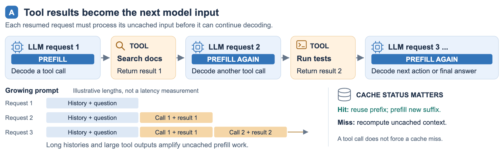
compress_ratios=[0,0, 2×18, 1×20, 0,0,0]：前 2 层 SWA 不压缩，18 层 CSA2 压缩比 2（即相邻 2 个 token 合成 1 个 cache 条目），20 层 Decoder 全为 1。出处：zartbot 1.2 / 2.3.3 节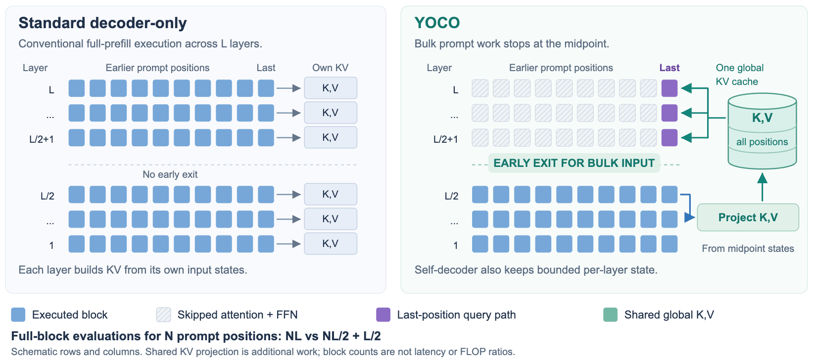
5.1 Reuse 模式为什么"只改 Q"也有表达力
这是跨层复用最值得推敲的一步：Main KV 冻结后，输出还能变吗？把被选中的 cache 向量按行堆成矩阵 \(C_A\in\mathbb{R}^{|A|\times d}\)（\(A\) 是被选中的地址集合），由于 key = value，单层注意力就是一个固定字典的读出：
\[ p(q)=\operatorname{softmax}\!\left(C_A q/\sqrt{d}\right),\qquad o(q)=C_A^{\top}p(q)\in\operatorname{conv}\{c_j:j\in A\} \]
因为 \(p(q)\) 非负且和为 1，输出是字典向量的凸组合——被锁在一个顶点固定的凸包内，重写 \(q\) 只能在包内移动。Full / Reindex / Reuse 三种模式的差别因此可以精确表述为：Full 增删或移动顶点（新内容）、Reindex 换激活哪些顶点（新地址）、Reuse 只在包内挪动内点（新 \(q\)）。
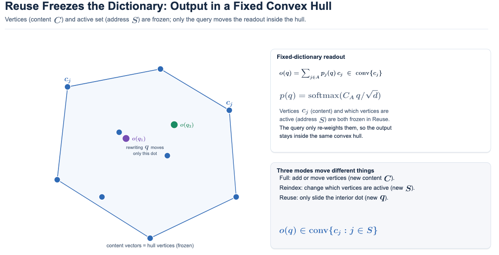
那"包内移动"能动多远？把 query 写成扰动形式 \(q=q_0+\Delta q\)，代入上式的 logit：
\[ (C_A q)^{\top}=\underbrace{(C_A q_0)^{\top}}_{p^*}+\underbrace{(C_A\,\Delta q)^{\top}}_{t} \quad\Longrightarrow\quad p_j\ \propto\ p_j^{*}\exp(t_j),\qquad t=\frac{C_A\,\Delta q}{\sqrt d}\in\operatorname{col}(C_A) \]
\[ \dim\operatorname{col}(C_A)\ \le\ \min\!\left(d,\ |A|\right) \]
即：改 \(q\) 等价于沿 \(t\) 方向对基线分布做一次指数倾斜再归一化。倾斜向量的活动范围被 \(C_A\) 的列空间限制住，维度上界是 \(\min(d,|A|)\)——本例 \(d=512\)、\(|A|=\text{SWA 128}+\text{index\_topk 512}=640\)，故倾斜被限制在至多 512 维子空间内。
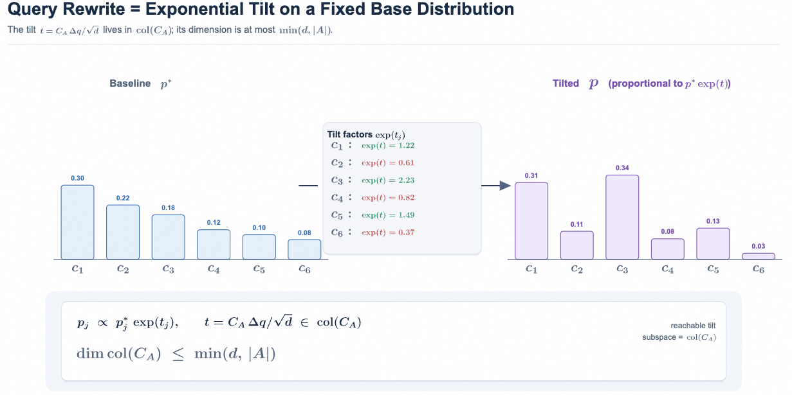
Reuse 的输出被锁在 \(\operatorname{conv}\{c_j:j\in A\}\) 里，而 Full 可以在所有层各自的 \(\operatorname{conv}\) 上取并集。差距正好是三件事：召回上限（不在字典里的内容永远够不着，且上游 Top-K 选错下游无法纠正）、顶点不可动、以及倾斜几何不可换——Reuse 能到达的分布是一个由 \(C_A\) 钉死的固定的指数族，而 Full 重选地址等于换掉整个指数族。
一个顺带澄清：RoPE 只对 \(q\) 与 \(c\) 的 rope 尾巴施加一个依赖位置的正交旋转，而正交旋转会被内积 \(q^{\top}c\) 完全吸收，所以上面关于凸包与倾斜的全部结论对 RoPE 不敏感——加 RoPE 既不会让可达集合变大，也不会变小。
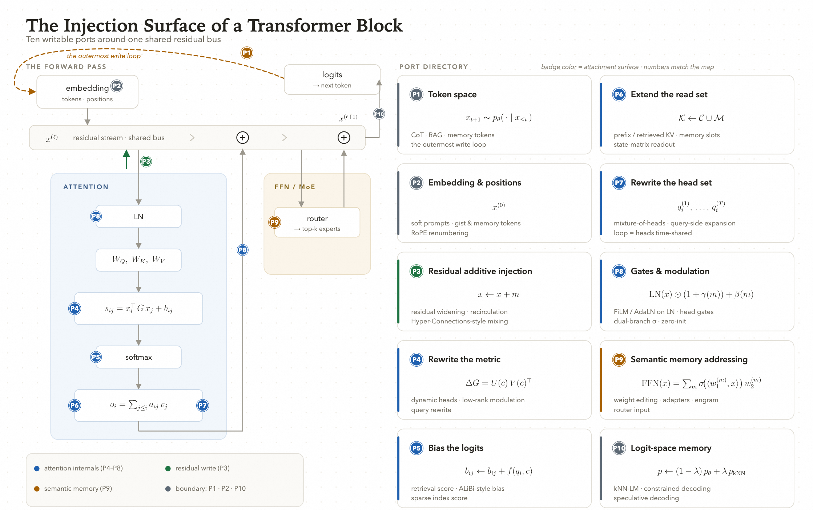
5.2 三个自由度的三重不对称，与三种刷新节奏
内容、地址、query 在三个维度上两两对立，这正是 CSA2 全部设计的支点：
| 自由度 | 数学类型 | 语义 | 生成代价 |
|---|---|---|---|
| 内容 \(C\) | 连续张量，可微 | 读什么（字典顶点） | 最贵：压缩器要扫全历史，全局计算 |
| 地址 \(S\) | 离散组合对象，几乎处处零梯度 | 从哪读（选哪些顶点） | 中等：Indexer 打分候选集 |
| query \(q\) | 连续向量，可微 | 怎么读（读取方向） | 最便宜：本层自己的投影，逐 token，不扫历史 |
三重不对称即：连续 vs 离散（梯度只能沿 \(C\) 与 \(q\) 流，\(S\) 只能靠以主注意力为教师的独立蒸馏路径学）、局部 vs 全局（\(q\) 是本层投影，\(C\) 要压全局，\(S\) 要打全候选）、快变 vs 慢变（历史语义跨层变化最慢，值得关注的地址中等漂移，每层的读取方向变化最快）。
三者还构成单向依赖链：地址由 Indexer 对内容打分得到，故 \(S\) 依赖 \(C\)；query 只在读出端注入以确定权重。所以复用只能沿依赖链自上而下：可以复用内容并连带复用地址（Reuse），可以复用内容但在同一内容上重选地址（Reindex），但不能改内容却沿用旧地址。三种模式正是"刷新哪几个自由度"的三种选择。
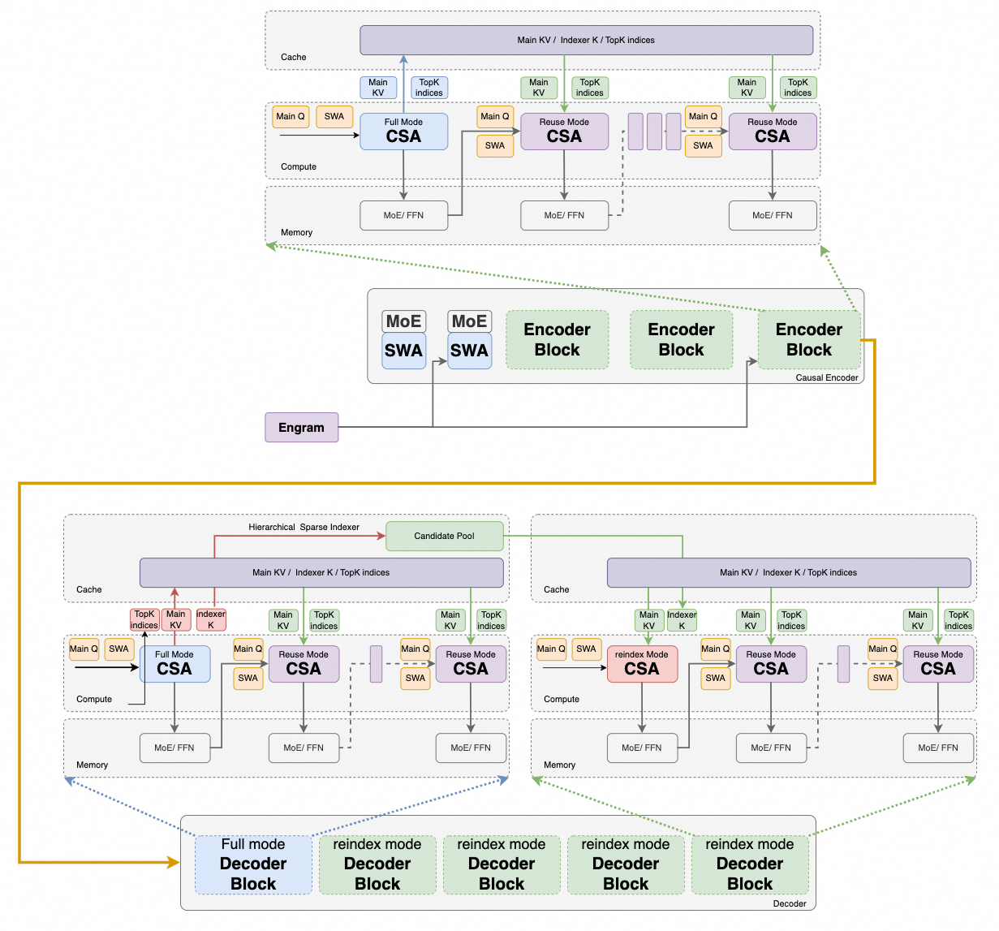
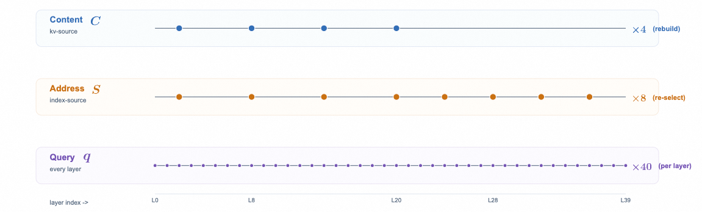
C 只在 4 个 kv-source 层重建（对应 kv_source_layers=[2,8,14,20]）、地址 S 在 8 个 index-source 层重选、query q 每层都刷新。刷新频率严格正比于重算成本——这正是 CSA2 的调度哲学：贵的东西少刷，便宜的东西勤刷。出处：zartbot 3.3.3 节Full（第 20 层）：定义内容 \(C\)，定义候选池（16384 个位置），并给出自己的 Top-512。
Reindex（第 24/28/32/36 层）：内容不变，在候选池内各自重选 Top-512。
Reuse：沿用最近一个 index 层发布的 Top-K，只重写 query。
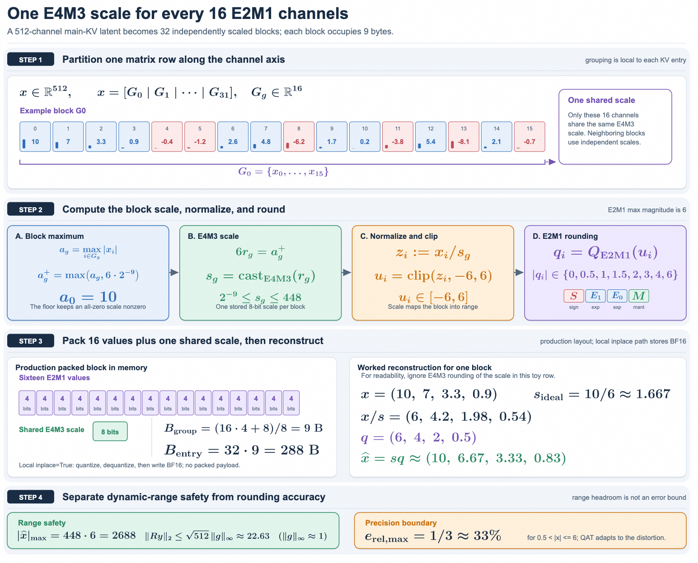
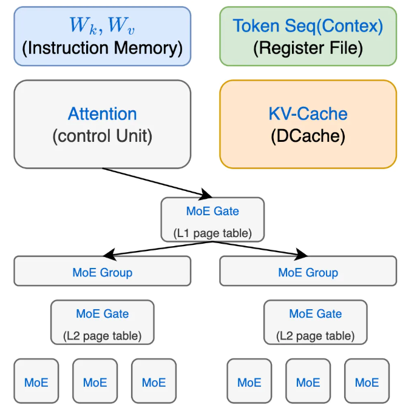
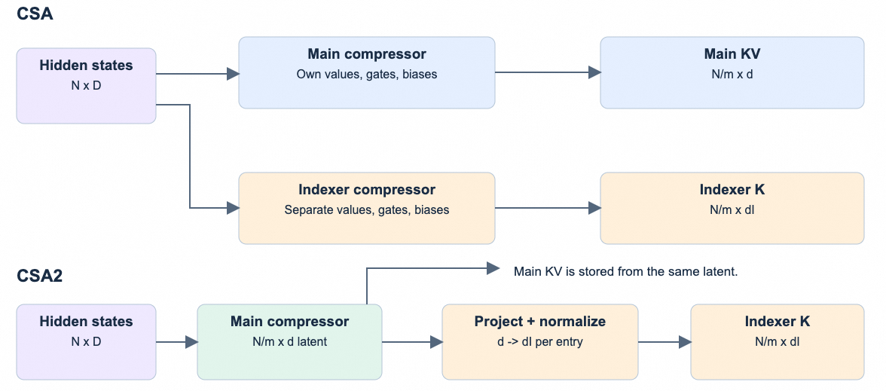
5.3 CSA2 相对 CSA 的两处工程简化
压缩比意味着每个 main KV 条目由若干原始条目合成，因此相邻条目之间天然重叠，还需要额外的绝对位置嵌入来编码这些条目的位置。CSA2 把重叠和绝对位置嵌入都去掉了：因为前两层的 SWA + Engram 已经把感受野展开、输入本身已是处理过的局部表示，压缩器不再需要做 overlap 处理。
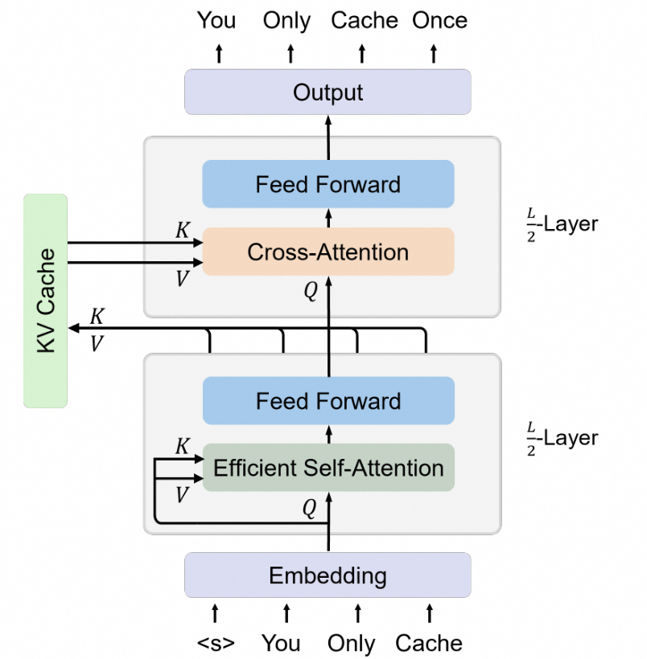
第二处：indexer K 改为从 main KV 条目投影得到，取代了 CSA 那条"从 hidden state 独立压缩"的旁路。
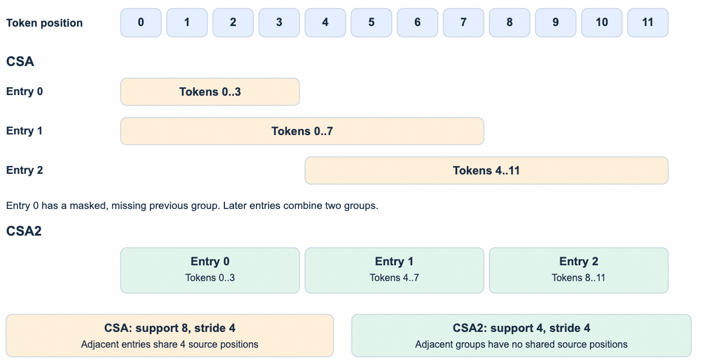
5.4 FP4 Main KV：为什么可以省掉二级全局 scale
Main KV 用 FP4 存，但这里的 FP4 只为省存储、不为加速矩阵乘法：为兼容尽可能多的硬件平台，仍采用 OCP 标准的 MXFP4 格式，注意力计算前把 cache 反量化回更高精度即可。DeepSeek 选 E2M1 数据类型、每 16 个通道共享一个 E4M3 scale 因子，对齐 NVFP4 但省掉它的二级全局 scale 因子。凭什么敢省？算一遍动态范围就知道：
\[ \text{RMSNorm 后近似单位 RMS}\ \Longrightarrow\ \|c\|_2\ \lesssim\ \sqrt{d}\cdot\max|g| \]
\[ d=512,\ \max|g|\approx 1\ \Longrightarrow\ \|c\|_2\ \lesssim\ \sqrt{512}\approx 22.6, \qquad \max_j|c_j|\ \le\ \|c\|_2 \]
\[ \text{RoPE 是正交旋转}\ \Longrightarrow\ \|R_{\text{rope}}c\|_2=\|c\|_2 \ \Longrightarrow\ \text{旋转后逐通道上界不变} \]
而 E2M1 的最大可表示幅度是 6。逐通道上界约 22.6 看似远超 6，但每 16 通道一个的 E4M3 scale 是按块自适应的——量程缩放本就由它承担，二级全局 scale 只是额外保险。原文结论：训练中观测到的最大幅度约 10，省掉全局 scale 不产生可测量的精度退化，同时简化了 cache 布局。
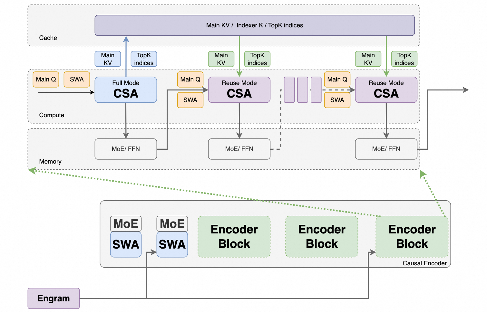
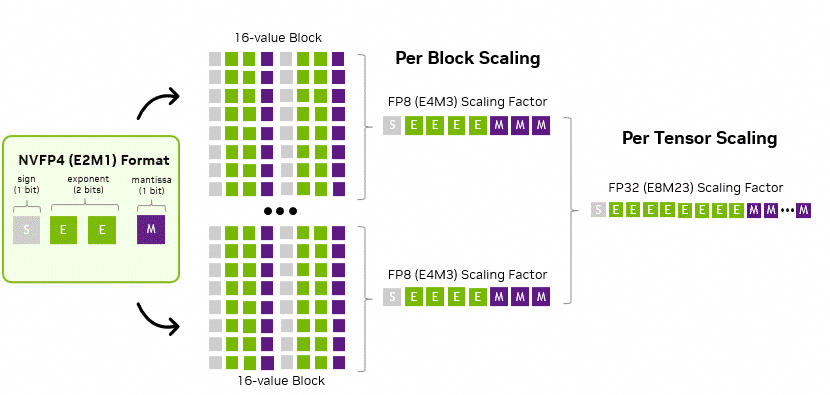
另有两条量化细节值得记：cache 在 RoPE 之后量化（RoPE 之前量化只带来极小的精度改善，却引入额外解码开销）；SWA 的 KV 保留 FP8，因为它对量化敏感。相对 V4 的 FP8 Main KV，HBM 占用与 SSD 卸载量都接近减半。
六、CED：Decoder 的 KV 从 Encoder 借
40 层中前 20 层为 Encoder、后 20 层为 Decoder；Decoder 的全局 KV 由 Encoder 末态 hidden 投影而来，后续 Decoder 层共享。于是长 prompt 的 prefill 只需走前 20 层：
\[ \text{prefill 激活 } \approx 8\mathrm{B},\qquad \text{decode 激活 } \approx 16\mathrm{B} \]
对"输入很长、输出很短"的 agent 场景，这是把 prefill 的计算量直接砍半。zartbot 的递归 Transformer 视角：整个 Decoder 是在"复用 Encoder 的 KV、只重写 Q"的递归过程中完成推理的。
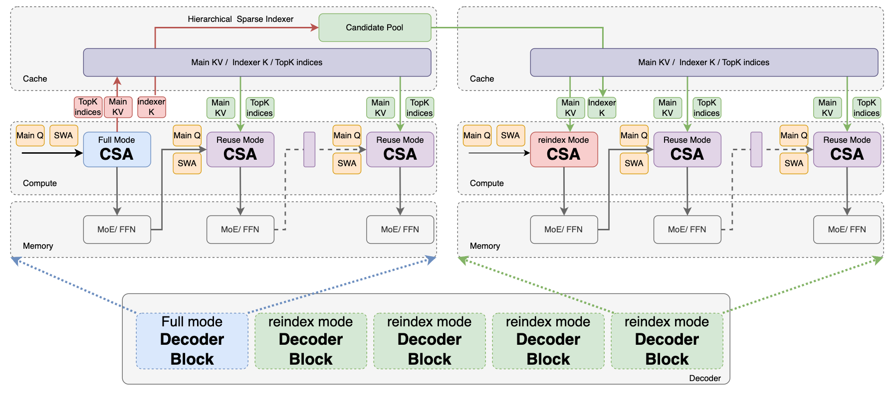
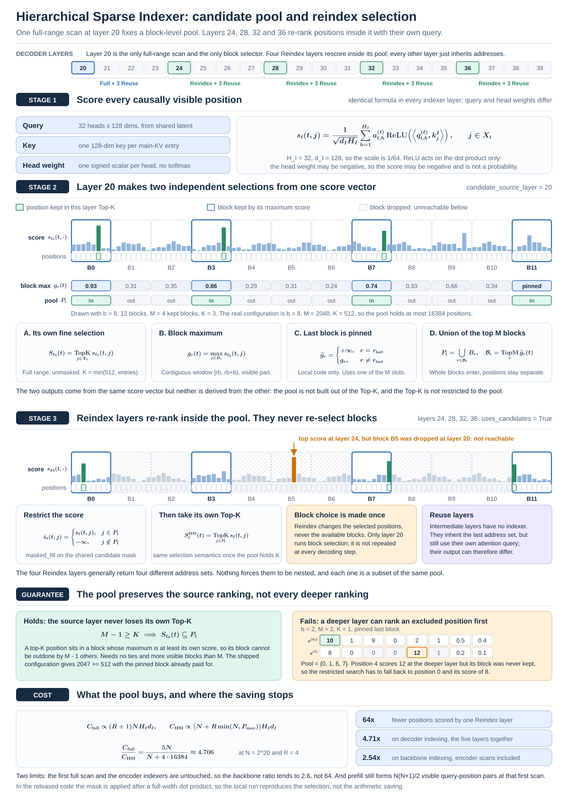
HSI 的思路来自 HISA 的"块级粗筛 + token 级细筛"，但两者粗筛的依据不同：
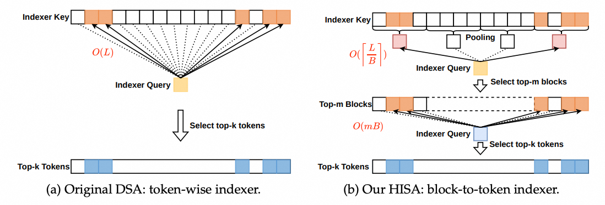
| HISA | HSI（DeepSeek 采用） | |
|---|---|---|
| 块统计量 | 块内 indexer 分数的均值 | 块内位置分数的最大值 |
| 何时算块统计 | 每层各自算 | 复用浅层已算出的完整位置分数，取块最大值 |
| 训练一致性 | 需额外状态 | 后训练阶段引入，训练与推理施加完全相同的候选限制 |
HSI 的关键优势是训练感知（training-aware）：候选限制在训练时就一并施加，深层 Indexer 因此是在推理时真正使用的搜索域下被优化的，不会出现训练能看全、推理被卡住的错配。
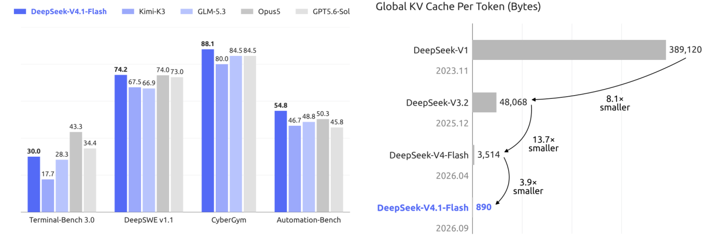
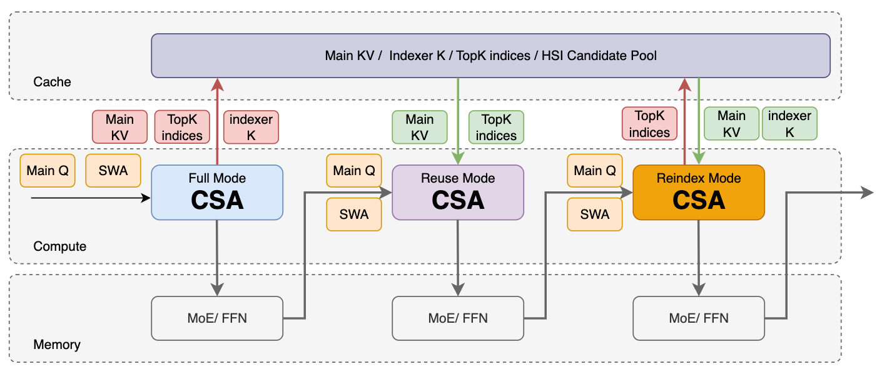